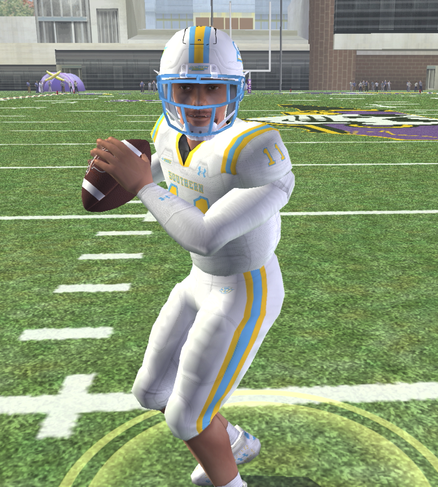
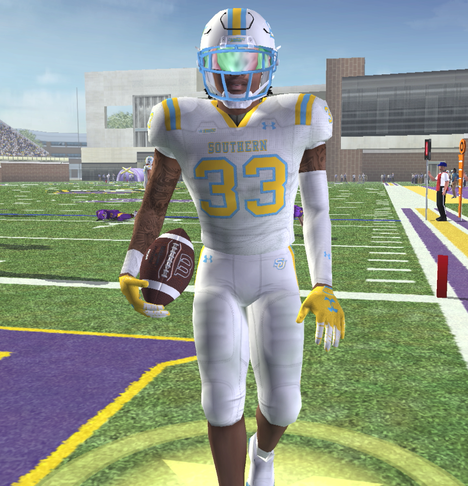

The last check-in caught this team at its lowest point — 1–3, a starting quarterback out six weeks, and a reigning Doak Walker winner who couldn't find room to run. Five games later, the picture looks different. A true freshman has taken the job outright, Southern strung together a four-game homestand with two wins in it — including Molinich's best single game of the season against Tennessee State — and then beat Temple to open the back stretch of the schedule. The record is still a losing one at 4–5, but the shape of the season has changed. This report stays close to Southern's own games; the national landscape gets its own companion piece.
In This Report
- The Season So Far
- Foxworth Takes The Job
- Molinich's Signature Night
- The Injury Report
- What's Ahead
- The Takeaway
The Season So Far
| Wk | Opponent | Score | Result |
|---|---|---|---|
| 0 | Bye | ||
| 1 | at Stanford | 31–24 | Win |
| 2 | at North Texas | 10–30 | Loss |
| 3 | at #6 Texas Tech | 27–57 | Loss |
| 4 | vs Tulane | 14–42 | Loss |
| 5 | Bye | ||
| 6 | vs ECU | 14–52 | Loss |
| 7 | vs Army | 27–10 | Win ▶ Watch The Episode |
| 8 | vs Tulsa | 26–40 | Loss ▶ Watch The Episode |
| 9 | vs Tennessee St. | 97–10 | Win ▶ Watch The Episode |
| 10 | vs Temple | 44–7 | Win ▶ Watch The Episode |
| 11 | at UAB | — | ▶ Watch The Episode |
| 12 | at Memphis | — | Upcoming |
| 13 | at UTSA | — | Upcoming |
The bye at Week 5 kicked off a stretch of four straight home games — ECU, Army, Tulsa, and Tennessee State — and Southern split them right down the middle, alternating loss, win, loss, win. The low point of that stretch was ECU, a 52–14 blowout loss that saw a quarterback change before it was over. The high point wasn't close: a 97–10 rout of Tennessee State the very next time out.
Foxworth Takes The Job

True freshman Joseph Foxworth first saw the field mid-game against ECU, relieving James Moody after a benching. He's started every game since: 19-of-33 for 213 yards and 3 touchdowns in the Army win, 22-of-37 for 333 yards and 2 touchdowns (with 2 interceptions) in the Tulsa loss, 11-of-22 for 224 yards and 2 touchdowns without a turnover against Tennessee State, and 18-of-29 for 245 yards and 3 touchdowns in the Temple win. Ty Wilson's original six-week recovery timeline from his Week 3 shoulder injury has now come and gone with no sign of him reclaiming the field — as of this check-in, this is Foxworth's offense.
Molinich's Signature Night

This is the version of Molinich the preseason expected, even if it took nine games to show up. Whether it carries into the back half of the schedule is the single biggest swing factor left in this season. One note worth tracking: his run of Heisman Watchlist appearances, four weeks deep as of the last check-in, hasn't added any further weeks since — the early-season buzz cooled off right as the numbers themselves were about to turn back around.
The Injury Report
Vaughn's return gives the receiving room a veteran option again, though it came in a loss. Wilson's situation is the more interesting one: healthy enough that his timeline has expired, but Foxworth's play has made this a non-question for now.
What's Ahead
Southern's 44–7 win over Temple keeps the bowl math alive at 4–5 (2–4 AAC). Three games remain: at UAB, at Memphis, and at UTSA.
The Takeaway
4–5 is still a losing record, but this is a fundamentally different team than the one the last check-in described. Foxworth has stabilized the quarterback room in a way none of his predecessors managed, and Molinich just proved the 2026 form is still in there. Three games remain to turn a rough start into a respectable finish.